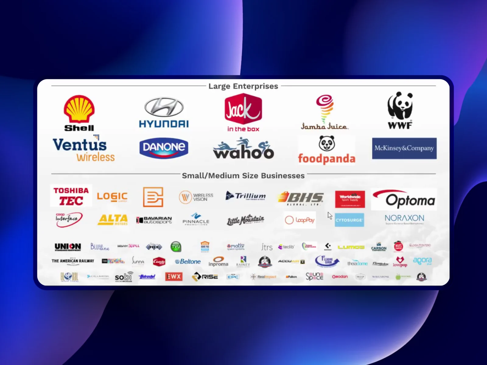
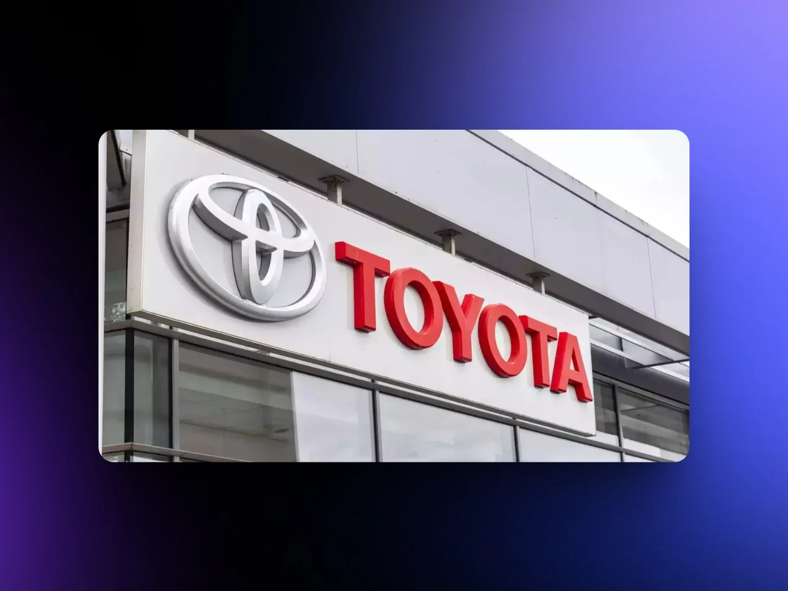
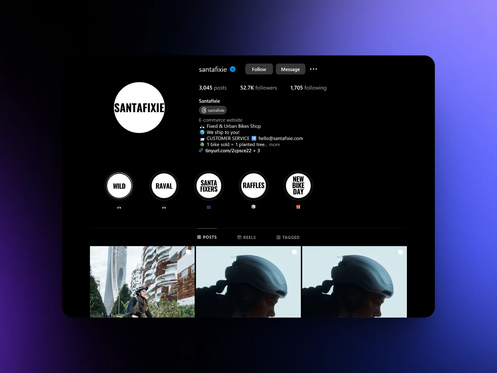
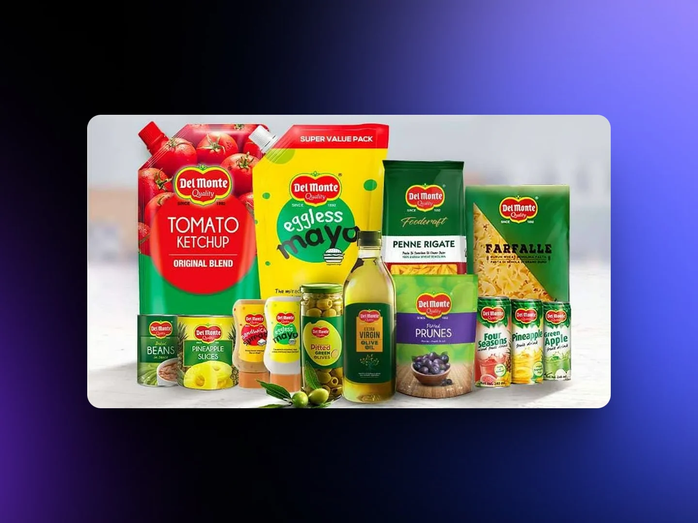
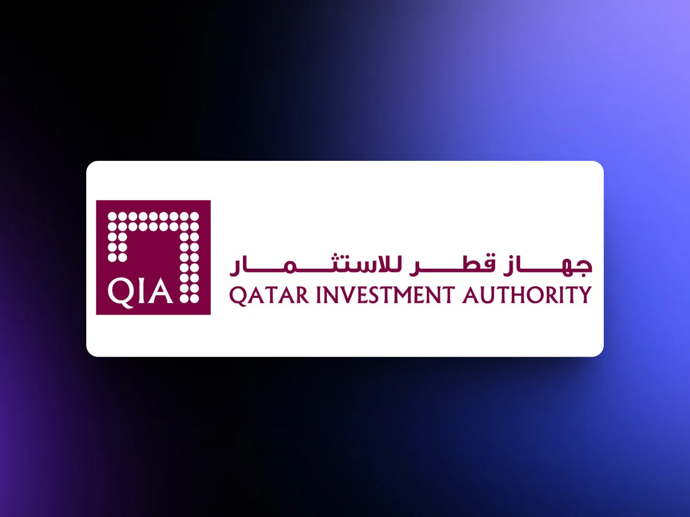
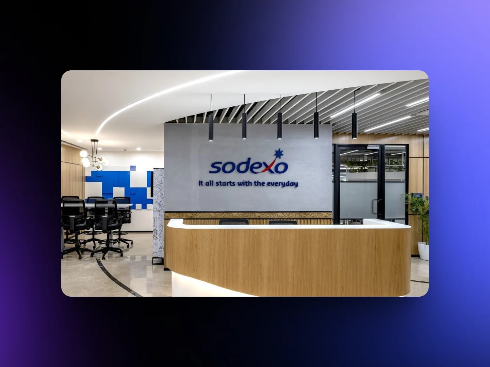
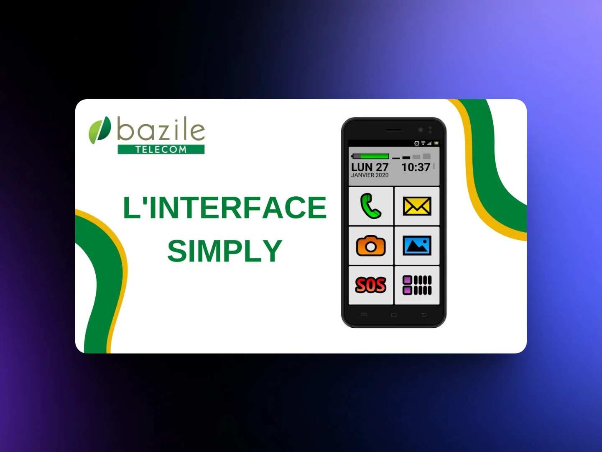
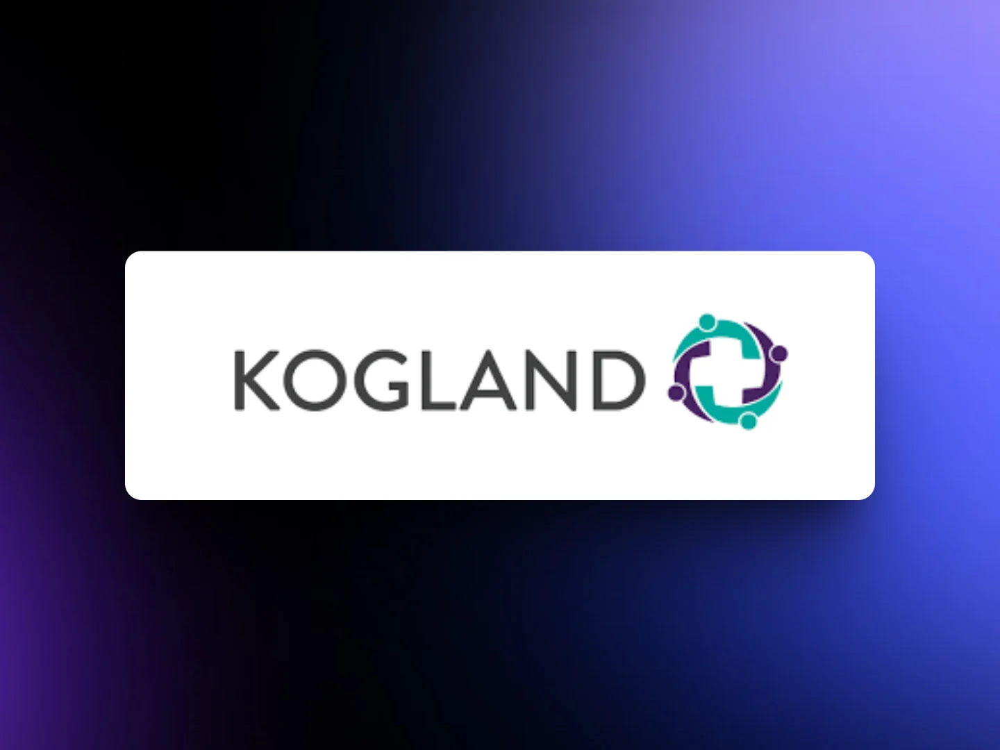
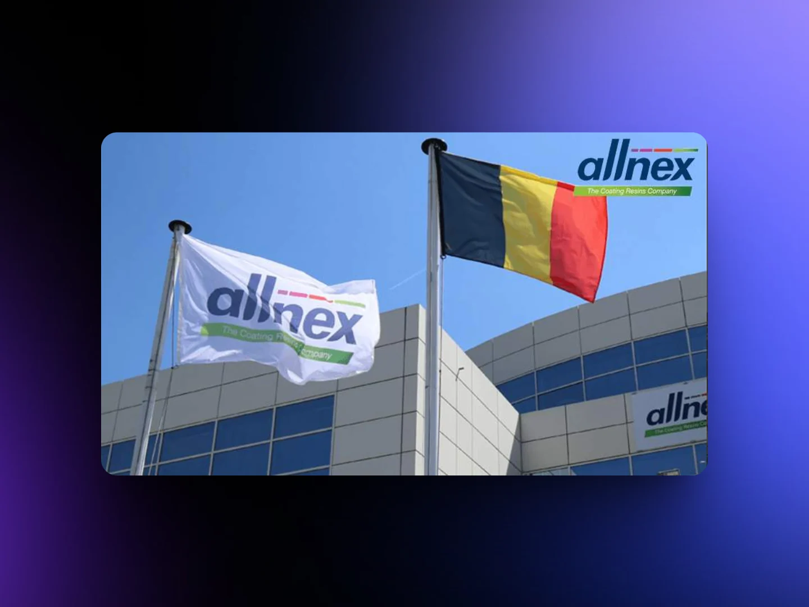

From the Bluzee archive. This article retains its original publication date and content; dated events, opportunities and product references should be read in that context.

Running a large or expanding company often brings a range of technical and organizational hurdles. Relying heavily on spreadsheets and physical paperwork can slow down operations and limit access to valuable business insights. This is where Odoo ERP steps in as a powerful solution to replace manual tasks with smart automation.
Well-known organizations like Toyota, Del Monte Quality, Sodexo, and WWF have successfully implemented tailored Odoo ERP systems to overcome such obstacles. Odoo helps these companies by not only identifying their challenges but also uncovering the root causes behind them.
Let’s explore how major enterprises benefit from using Odoo ERP for managing processes, enhancing automation, and tackling operational issues:
Benefits for Companies Using Odoo ERP:
Identify which areas of the business generate the most value.
Store all manufacturing-related data in a centralized platform.
Efficiently manage customer relationships through an integrated CRM.
Strategically plan workforce needs ahead of time.
Execute changes across the organization from a single system to better manage resources and optimize workflows.
Toyota

Toyota is a world-famous and gigantic car manufacturer that heads our list of companies that use Odoo. It needed a high-quality ERP to automate many processes and connect dozens of departments. Thus, they discovered and implemented the Odoo solution within months. It was quite an urgent integration, but Odoo has the advantage of fast execution under the professional development team.
Santafixie

The bicycle company uses Odoo for Client Relationship Management (CRM) goals. They have a website with an extensive assortment: wheels, bicycles, locks, pedals, etc. It means the target audience is better reached with a multichannel experience, which is best managed with effective CRM.
Delmonte Quality

The food and drink manufacturer needs an efficient ERP system to manage all distributors’ sales around the country. It requires well-connected communication among many departments to run business processes smoothly.
Thus, they requested customized Odoo modules like Distributor Management System, Purchase Automation Module, a Continuous Replenishment Module, and a Vendor Managed Inventory Module. As a result, they are more versed in internal data like delivery records, order quantity, etc.
Qatar Investment Authority

In 2005, the Qatar Investment Authority was established as a government-owned holding company and is now recognized as a sovereign wealth fund. Specializing in both domestic and foreign investments, the company faced the obstacle of collecting confidential contact information from global prospects in a secure location. Fortunately, Odoo was able to provide the necessary support.
With Odoo’s ERP, Qatar Investment Authority was able to centralize and manage all of its contact information while maintaining strict security protocols. This resulted in increased efficiency, an expanded network of partners, the ability to forecast future campaigns, and other benefits.
Sock Club
The socks business used Odoo ERP for CRM to remain competitive in the socks market and enhance customer loyalty. The last should be planned and invested in collecting appropriate data to understand client behavior and needs. And Odoo helps the sales team to collect all necessary numbers, not just make up them.
WWF
The World Wide Fund is an international organization for endangered species conservation, and they need an ERP too. Therefore, Odoo requested IT assistance in funding, development, and growth. A skilled team integrated the system which improved business operations and management components.
Scarpetta Shoes
It is an e-commerce store that uses Odoo for more proficient CRM and improved client experience. Here, Odoo is a perfect end-to-end solution that helps manage sales, accounting, inventory, etc. It scales your website and makes it a more flexible online store.
Sodexo

As per their website, Sodexo is transforming blemished food into beautiful dishes. It is a food services company that needed high-quality ERP to set up a central management system for the vending machine division. Odoo’s capabilities helped the organization run business processes smoothly in a year with the help of six customized modules.
Cobuild Lab
The software development company uses Odoo for CRM to detect and attract more leads. Odoo ensures exceeded seller-customer communication, ensures data privacy and security, and arranges better customer retention. Thus, Cobuild Lab builds its strategies on detailed reporting and a proactive service approach.
Bazile Telecom

Bazile Telecom is a French telecommunication services provider. It serves mostly older people, so it needed an ERP system to organize a huge client database. High quality of service, new personalized offers, and simplified access are now more available with Odoo modules for HR Management, Accounting, and Sales.
KOGLAND Commerce Pvt Ltd

The last in the list of companies that use Odoo is an eCommerce platform selling medical supplies, equipment, and devices for hospitals & clinics.
Like any B2B online shopping store, they needed a CRM to collect and analyze customer preferences and demands, display clear data on easy-to-manage dashboards, and make more informed decisions as a result. A combination of ERP and CRM gives your business an unbeatable advantage through improved communication, a unified data model, and real-time updates.
Allnex

As a prominent manufacturer of coating resins and additives for various industries, Allnex operates through 33 production facilities, 23 research and technology centers, and five partnerships across four continents. Serving clients in over 100 countries, the Allnex Group maintains a strong global presence.
For its enterprise resource planning, Allnex opted for an Odoo implementation that utilized eight modules across ten trade stores in Australia and New Zealand. With an estimated 160 users, the company’s B2C sector now benefits from a distinct system that streamlines product and customer data updates, elevates the point-of-sale experience, and boosts team productivity by reducing manual tasks.